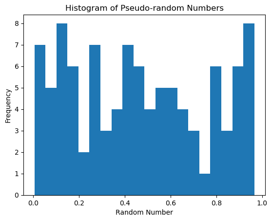

def lcg(seed, Total_sample):
a = 1103515245
c = 12345
m = 2 ** 31
result = []
current = seed
for _ in range(Total_sample):
current = (a * current + c) % m
random_number = current / float(m) # Normalize to range [0, 1]
result.append(random_number)
return result
# Example usage:
random_numbers = lcg(42, 100)
#print(random_numbers)Univariate Normal Distribution
Implementing a pseudo-random number generator (PRNG) - An algorithm that generates a sequence of numbers that exhibit properties of randomness
a simple PRNG algorithm called is Linear Congruential Generator (LCG) - The LCG algorithm is defined by the following recurrence relation:
\(X_{n+1} = (a \cdot X_n + c) \mod m\)
- \(X_{n+1}\) represents the next pseudo-random number in the sequence.
- \(X_n\) is the current pseudo-random number in the sequence.
- \(a\) is the multiplier, which determines the overall distribution and period of the generated sequence.
- \(c\) is the increment, which shifts the generated sequence.
- \(m\) is the modulus, which determines the range of values that the generated numbers can take.
Plot histogram
import matplotlib.pyplot as plt
plt.hist(random_numbers, bins=20)
plt.xlabel('Random Number')
plt.ylabel('Frequency')
plt.title('Histogram of Pseudo-random Numbers')
plt.show()
Using PyTorch
import torch
random_numbers=torch.rand(100)
plt.hist(random_numbers, bins=20)
plt.xlabel('Random Number')
plt.ylabel('Frequency')
plt.title('Histogram of Pseudo-random Numbers')
plt.show()
Convert Unifom Sampling to Bernoulli Sampling
we can use the probablity \((p)\) of outcome 1 and \((1-p)\) of outcome 0
import torch.distributions as dist
success_rate = bernoulli_samples.sum().item()
failure_rate = len(bernoulli_samples) - success_rate
plt.bar(['1', '0'], [success_rate, failure_rate])
plt.xlabel('Outcome')
plt.ylabel('Frequency')
plt.title('Uniform to Bernoulli Sampling')
plt.show()

function for uniform to Bernoulli
def Uniform_to_Bernoulli(samples, threshold):
bernoulli_dist = dist.Bernoulli(torch.tensor([threshold]))
bernoulli_samples = bernoulli_dist.sample(samples.shape)
return bernoulli_samplesgenerate the uniform samples
torch.manual_seed(42)
uniform_samples = torch.rand(10000)Uniform -> Bernoulli
bernoulli_samples = Uniform_to_Bernoulli(uniform_samples, 0.7)
#print(bernoulli_samples)
success_samples = bernoulli_samples.sum().item()
failure_samples = len(bernoulli_samples) - success_samples
print(success_samples)
print(failure_samples)7025.0
2975.0Plot the success \(p(1)\) and \(1-p(0)\)
plt.bar(['1', '0'], [success_samples, failure_samples])
plt.xlabel('Outcome')
plt.ylabel('Frequency')
plt.title('Uniform to Bernoulli Sampling')
plt.show()
Now we convert Bernoulli distribution to a categorical distribution
function for Bernoulli to Categorical distributions
def Bernoulli_to_Categorical(samples):
categorical_dist = dist.Categorical(torch.stack([(1 - samples), samples], dim=1))
categorical_samples = categorical_dist.sample().long()
return categorical_samples
torch.manual_seed(42)
bernoulli_samples = torch.tensor([0, 1, 1, 0, 1, 0, 1, 0, 0, 0, 0, 0, 1, 1, 1, 1, 1, 1, 1, 1, 1])
categorical_samples = Bernoulli_to_Categorical(bernoulli_samples)
category_counts = torch.bincount(categorical_samples)
categories = torch.arange(len(category_counts))
# Calculate category probabilities
total_samples = len(categorical_samples)
category_probabilities = category_counts.float() / total_samples
Plot the bar chart with category probabilities
plt.bar(categories, category_probabilities)
plt.xlabel('Category')
plt.ylabel('Probability')
plt.title('Bernoulli to Categorical Sampling')
plt.xticks(categories, ['Category 1', 'Category 2'])
plt.show()
Box Muller Method
# Number of samples
num_samples = 10000
# Generate uniform random numbers in range [0, 1)
u1 = np.random.rand(num_samples)
u2 = np.random.rand(num_samples)
# Apply Box-Muller transformation
z1 = np.sqrt(-2 * np.log(u1)) * np.cos(2 * np.pi * u2)
z2 = np.sqrt(-2 * np.log(u1)) * np.sin(2 * np.pi * u2)
# Plot the transformed samples
plt.figure(figsize=(8, 4))
plt.hist(z1, bins=50, density=True, alpha=0.7, label='z1')
plt.hist(z2, bins=50, density=True, alpha=0.7, label='z2')
plt.xlabel('Value')
plt.ylabel('Density')
plt.title('Uniform to Normal Distribution (Box-Muller Method)')
plt.legend()
plt.grid(True)
plt.show()